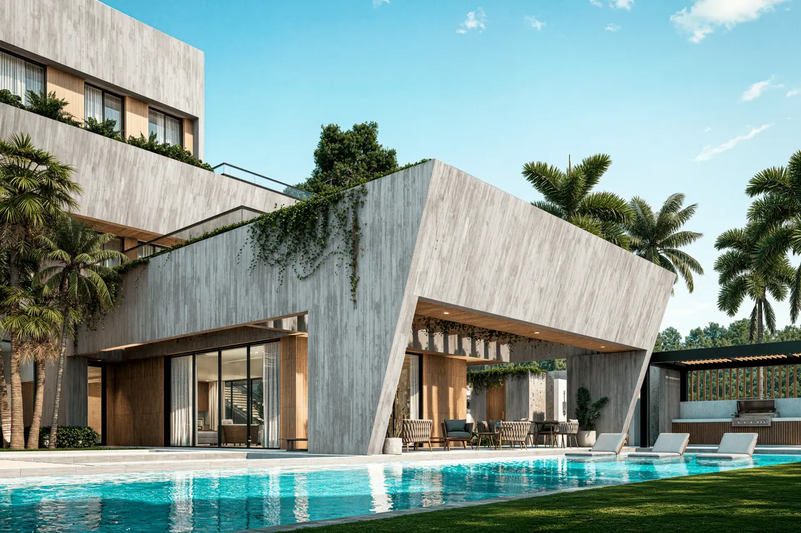

République dominicaine · Cap Cana
Des villas de 6 à 10 chambres sur de grands terrains, à Cap Cana.
- Chambres
- 6 à 10
- Terrains
- 2 000 à 3 400 m² et plus
- Piscine
- Privée, avec jacuzzi
- Prix
- Sur demande
Le projet
Cap Cana Villas
Une collection de villas contemporaines à Cap Cana, entourées de parcours Nicklaus, de plages de sable blanc et d’une marina de style européen. Bois, pierre naturelle et grandes baies vitrées : chaque villa offre de vastes espaces intérieurs et extérieurs.
Chaque villa comprend une piscine privée, un jacuzzi, des chambres de service et un espace BBQ, sur des terrains de 2 000 m² à plus de 3 400 m². Environ 4 h 30 de vol depuis Montréal ou Toronto.
Emplacement
- Trois parcours signés Nicklaus
- Plages Juanillo et Api
- Marina de Cap Cana
- Écuries et Punta Cana Polo Club
- Aéroport de Punta Cana à proximité
Aménagements
- 01Piscine
- 02Jacuzzi
- 03Espace BBQ
- 04Jardins paysagers
- 05Parcours de golf
- 06Accès à la plage
- 07Marina de Cap Cana à proximité
Galerie
Galerie
Rendus officiels du promoteur. Les aménagements peuvent évoluer.
Projet suivant

Première conversation
Parlons de votre projet
Trente minutes, en français ou en anglais, pour choisir par où commencer.
Choisir une heure